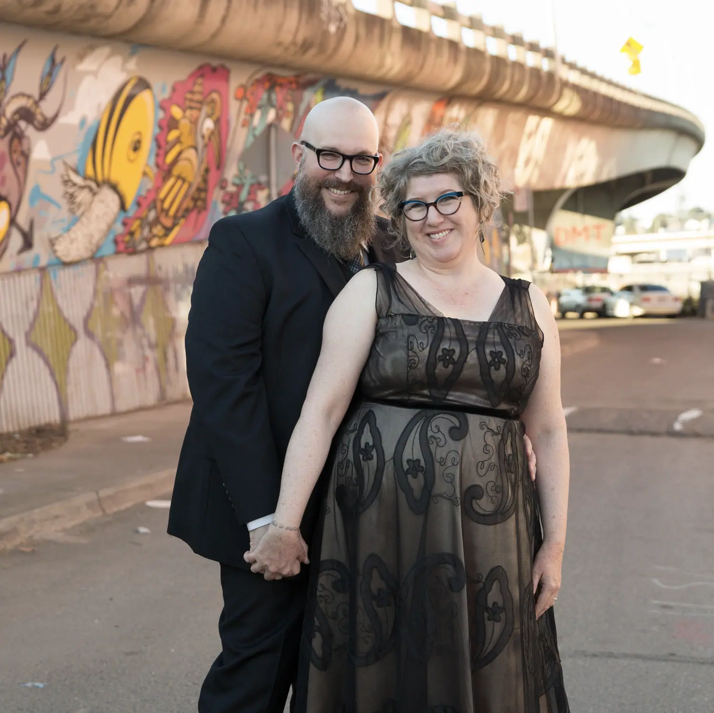

★★★★★
Rock star!
Wedding celebration“Lydia Daniller is a rock star, plain and simple. She met with us ahead of time to get a sense of our style, and give us some encouragement (‘There’s no such thing as not photogenic’). She suggested we take some engagement-style photos near the event venue before guests arrived, and gave amazing direction. She was such a boss, gathering folks for group shots, keeping them in line, and capturing so much fun.
She was everywhere we didn’t even know we wanted her to be. After we shared the photos, one friend said, ‘I see a lot of great people having a great time’, which was the goal of the party in the first place.”